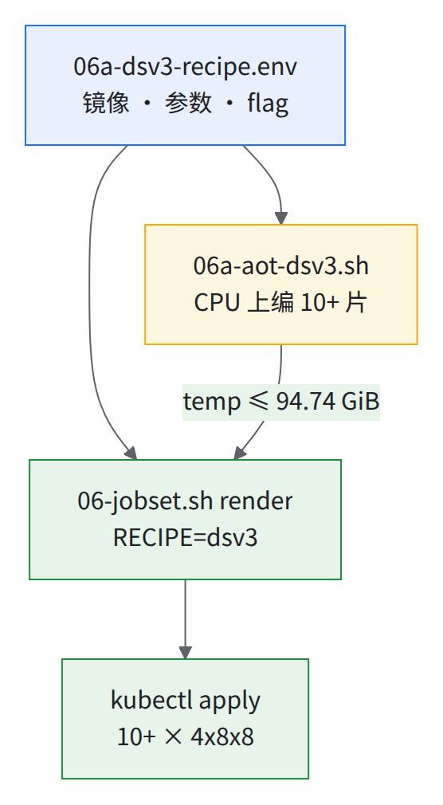
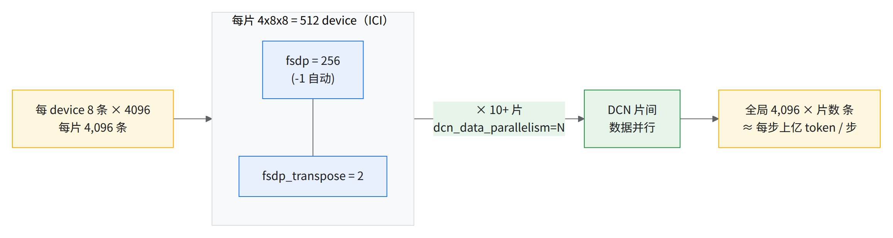
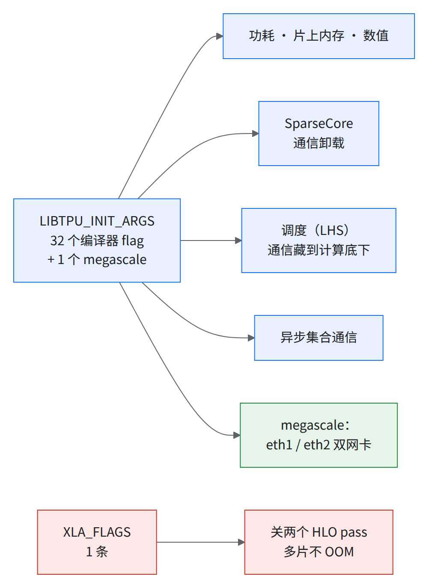
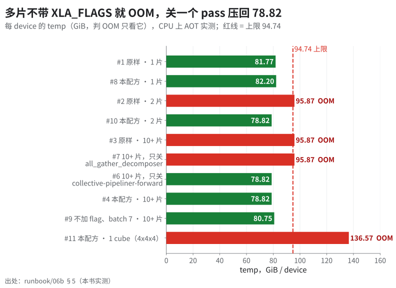
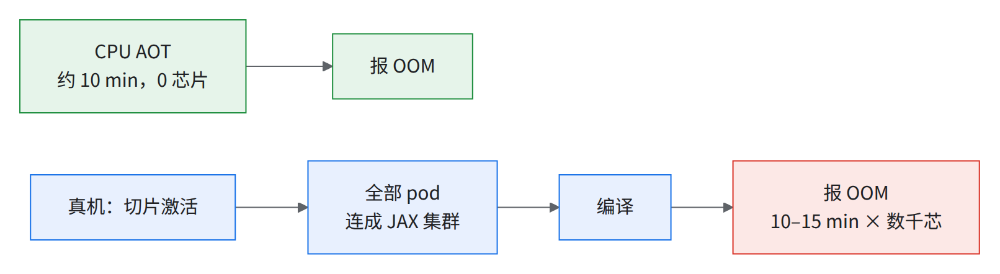
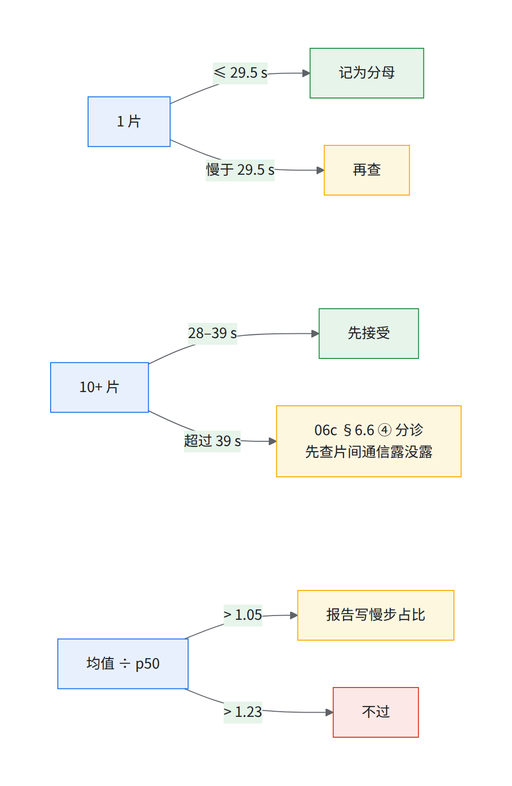

06b 公开配置训练配方：DeepSeek-V3 671B × 10+ 片 4x8x8（数千芯片）
要解决什么：06c 章用的是非公开模型；要复现，用这份只用公开东西跑数千芯片的配方。公开配置按单片调，上多片先在 CPU 上编一遍再占卡。
💡一句话结论原样上 10+ 片 OOM；加一条
XLA_FLAGS（关两个 HLO pass）装得下，但关掉的 pass 管片间通信重叠，10+ 片步时以真机实测为准。
- 数千芯片 10+ × 4x8x8
- 95.87 GiB 原样上多片：OOM
- 78.82 GiB 加
XLA_FLAGS后 10+ 片 - +6% 单片基准实测步时（比公开 tpu-recipes 同形状参考）
前置条件
- 同 06c：04 全过、03 §3.5 的 LocalQueue 在、节点双网卡（02 §2.7）；不用环境 tar、gcsfuse PVC、overlay、私有仓库 Secret。
- 多一条：镜像仓库
us-docker.pkg.dev/tpu-prod-env-multipod/maxtext-images不能匿名拉（DENIED: Unauthenticated request … artifactregistry.repositories.downloadArtifacts）。
- 本机 AOT 先
gcloud auth configure-docker us-docker.pkg.dev。- 节点服务账号能不能拉 [需验证]：第一天前按下面「镜像可拉验证」试拉，拉不到就复制进使用方自己的 Artifact Registry。
- 什么时候做：建集群窗口内、第一天之前。拉不到就什么都跑不了。
- 拉不到怎么办：按下面②③复制进你自己的 Artifact Registry；你的账号能否直接读源仓库，Google 可协助确认。
# 【工作站】① 试拉：在 $INSPECT_NS 起一个只拉镜像的 pod（$NS 里会被 Kueue 挂住，06c §6.1）
source ~/runbook-env.sh && source "$RUNBOOK_DIR"/scripts/06a-dsv3-recipe.env
kubectl -n $INSPECT_NS run dsv3-pull-check --image="$RECIPE_IMAGE" --restart=Never \
--overrides='{"spec":{"nodeSelector":{"cloud.google.com/gke-nodepool":"'"$SYSTEM_POOL"'"}}}' \
--command -- python3 -c 'print("PULL_OK")'
kubectl -n $INSPECT_NS get pod dsv3-pull-check -w # 期望 Completed；ErrImagePull / ImagePullBackOff = 节点身份拉不到
kubectl -n $INSPECT_NS logs dsv3-pull-check # 期望 PULL_OK
kubectl -n $INSPECT_NS delete pod dsv3-pull-check
# TPU 池和系统池的节点身份要一样，①才代表 TPU 池；两条输出应相同（"default" = Compute Engine 默认服务账号 [推断]）
TPU_POOL=$(gcloud container node-pools list --cluster $CLUSTER --location $ZONE --project $PROJECT --filter="name~^${POOL_PREFIX}" --limit=1 --format='value(name)')
for p in $SYSTEM_POOL $TPU_POOL; do
gcloud container node-pools describe $p --cluster $CLUSTER --location $ZONE --project $PROJECT --format='value(config.serviceAccount)'; done
# 【工作站】② 拉不到：复制进使用方 AR（docker 三步；本机要先能拉到源镜像）
gcloud artifacts repositories create maxtext --repository-format=docker --location=$REGION --project=$PROJECT
gcloud auth configure-docker us-docker.pkg.dev,${REGION}-docker.pkg.dev
DST=${REGION}-docker.pkg.dev/$PROJECT/maxtext/maxtext_jax_nightly:maxtext_54f66f5_20260924
docker pull "$RECIPE_IMAGE" && docker tag "$RECIPE_IMAGE" "$DST" && docker push "$DST" # push 末行打印 digest: sha256:…
# ③ 给节点身份读权限：NODE_SA 取 TPU 池的节点服务账号；describe 打出 "default" 时换成 Compute Engine 默认服务账号
NODE_SA=$(gcloud container node-pools describe "$TPU_POOL" --cluster $CLUSTER --location $ZONE --project $PROJECT --format='value(config.serviceAccount)')
[[ "$NODE_SA" == default ]] && NODE_SA="$(gcloud projects describe $PROJECT --format='value(projectNumber)')-compute@developer.gserviceaccount.com"
echo "NODE_SA=$NODE_SA" # 空的就别往下跑（TPU_POOL 来自上面①的最后一段）
gcloud artifacts repositories add-iam-policy-binding maxtext --location=$REGION --project=$PROJECT \
--member="serviceAccount:$NODE_SA" --role=roles/artifactregistry.reader
# 之后所有命令前：export RECIPE_IMAGE=${REGION}-docker.pkg.dev/$PROJECT/maxtext/maxtext_jax_nightly@sha256:<push 打印的 digest>
# 再跑一遍 ①（--image 用新地址）
- digest 可能变：docker 推回去时会不会重新打包层、push 后 digest 是否与源相同，未核。不同就用 push 打印的那个，并重跑 §5 的 AOT 核一遍 temp。
RECIPE_IMAGE可以 export 覆盖：06a-dsv3-recipe.env写成${RECIPE_IMAGE:-…}，不用改文件（未实测）。
⚠️优先级共享集群
POD_PRIORITY=（清空），render 后确认没有priorityClassName，否则静默抢占别人；默认high只适合独占集群。见 06c §6.5.1 警告框。
术语（06c 章有的不重复）：
| 词 | 一句话 |
|---|---|
| AOT（提前编译） | CPU 上按目标拓扑编训练步，拿每 device 的编译期显存估计（不是实机峰值） |
| HLO pass | XLA 的一道改写步骤；--xla_disable_hlo_passes 按名字关 |
FSDP / fsdp_transpose |
权重、梯度、优化器状态切到 N 个 device，用时 all-gather；后者是第二个切分轴 |
| remat / offload | 反向时重算激活 / 激活暂存到 host 内存 |
| temp / argument / host temp | 编译报告三笔账：临时内存 / 常驻参数与优化器状态 / 卸到 host 的临时内存 |
| MFU | 实际 TFLOP/s ÷ 峰值 TFLOP/s |
脚本（runbook/scripts/）：
| 文件 | 干什么 |
|---|---|
06a-dsv3-recipe.env |
唯一参数源：镜像 digest、MaxText 参数、32 个编译器 flag、XLA_FLAGS、1 个 megascale flag |
06a-jobset-dsv3.yaml |
JobSet 模板（骨架同 JIT 基线作业） |
06-jobset.sh RECIPE=dsv3 |
06c 的脚本 |
06a-aot-dsv3.sh |
见下图 |

读图：JobSet 和 AOT 读同一份 env，体检的就是真要跑的配置。
1.为什么选 DeepSeek-V3 671B
同量级、上游有配置、实测环境里出现过：
| 大号 MoE 模型（06c 章 JIT 基线作业） | DeepSeek-V3 671B（本配方） | |
|---|---|---|
| 代码 | 训练方自有的 MaxText 分支 | 上游 AI-Hypercomputer/maxtext @54f66f5 |
| 模型配置 | 私有 moe-large.yml |
公开 src/maxtext/configs/models/deepseek3-671b-2dfsdp.yml |
| 镜像 | python 基础镜像 + 自建 10.3 GB env tar | 公开 MaxText nightly 镜像，按 digest 钉死 |
| 规模 | 数百 B 级 MoE | 671B（官方口径）；61 层（前 3 层稠密）；256 专家 top-8 + 1 共享专家；MLA |
| 每 device 每步 FLOPs | —（只给相对值） | 8,206.74 TFLOP（MaxText 自报） |
| 单片 4x8x8（实测集群） | 有（本书实测，06c 第 2 级；作为下一行相对值的基准） | 步时比公开参考长约 6%，约 290 TFLOP/s/device（单片基准：与公开 tpu-recipes 4x8x8 配置几乎相同，在实测集群上跑 30 步合成数据；下文都叫它「单片基准」） |
| 10+ 片（实测集群） | 弱扩展效率 72%，步时比单片慢约 40%（本书实测，06c 第 4 级） | 没有 |
| 公开参考 | 无 | tpu-recipes Ironwood 单片 4x8x8：26.586 s/step、617.38 TFLOP/s/chip（commit cd4b64a286 的提交说明，对应当时的 nightly；main 上的 recipe 目录已重组、不再列这组数，公开 recipe 会持续更新） |
- 源模型配置 gh api repos/AI-Hypercomputer/maxtext/contents/src/maxtext/configs/models/deepseek3-671b-2dfsdp.yml?ref=54f66f5
- 源公开参考 tpu-recipes commit cd4b64a286 的提交说明
为什么用 -2dfsdp 而不是 deepseek3-671b.yml：单片基准用的就是它，结构一字不差（diff 只多 mesh_axes / logical_axis_rules）；data_sharding 有 data 轴，dcn_data_parallelism 直接接上。
2.配方一览
| 项 | 值 | 为什么 |
|---|---|---|
| 形状 | 10+ × 4x8x8 = 数千芯片，device 数 = 芯片数 × 2（v7x 每芯片 2 个 device）；每片 64 pod，pod 数 = 片数 × 64 | 同 06c 章 |
| 并行 | 片内 FSDP × fsdp_transpose，片间数据并行 |
见下图 |
| batch | per_device_batch_size=8 × max_target_length=4096 |
单片基准原值，贴着显存上限，改前重跑 AOT（§5） |
| 精度 | BF16 计算、FP32 主权重、BF16 梯度（grad_dtype=bfloat16） |
片间 all-reduce 字节减半 |
| 优化器 | AdamW，一阶矩 BF16（mu_dtype=bfloat16）、二阶矩 FP32 |
§5 锚点 |
| 显存策略 | remat_policy=custom + decoder_layer_input=offload（每层输入存到 host 内存） |
§5 锚点 |
| kernel | Tokamax Splash 注意力（sa_block_*=2048）、Tokamax GMM v2（MoE 分组矩阵乘，分块 wi_tile_* / wo_tile_*） |
单片基准原值 |
| 数据 | 合成数据，不开检查点，50 步 | 只验「环境 + 规模 + 网络」，同 JIT 基线作业 |
| 功耗档 | --xla_tpu_dvfs_p_state=3（默认档） |
7 档快几个百分点；高负载下的稳定性仍在确认，先用默认档（06c §6.4.1） |
| 镜像 | us-docker.pkg.dev/tpu-prod-env-multipod/maxtext-images/maxtext_jax_nightly@sha256:ee855b80…c23cc5（digest 中间省略，全文见 §3 的 JobSet；tag maxtext_54f66f5_20260924；jax / jaxlib 0.12.0.dev20260923、libtpu 0.0.49） |
官方仓库（要登录）；digest 取自实测时的 docker pull，版本取自 pip list |

读图：片间只做数据并行，跨 DCN 的只有梯度同步。
- 不挂桶：输出写 pod 本地
/tmp/maxtext-out；要留 tensorboard 就把OUTPUT_DIR设成gs://…并按 01 §1.5 ③ 给$KSA授权。 - 镜像解压约 18 GB、传输约 3.55 GB（kubelet
sizeBytes: 3550427400）；大量 host 同拉会慢 [推断]，可 DaemonSet 预拉。
3.生成与提交 JobSet
source ~/runbook-env.sh && rb_env_check PROJECT REGION ZONE CLUSTER # 全书变量块 scripts/env.sh；本配方只多要 RUN_NAME / JOBSET_NAME
S="$RUNBOOK_DIR"/scripts/06-jobset.sh
export RECIPE=dsv3
# 0）先在 CPU 上编一遍（不占卡，约 10 分钟，见 §5）
SLICES=<片数> "$RUNBOOK_DIR"/scripts/06a-aot-dsv3.sh ms # 期望脚本最后打印「temp 78.82 GiB … ✓ 装得下」、退出码 0（只看到 Finished … successfully! 不算数，§5 坑 2）
# 共享集群：export POD_PRIORITY= （清空；独占集群保持默认 high，见开头 ⚠️）
# 1）单片：配置 = 单片基准 + XLA_FLAGS + megascale flag，量出的是本配方自己的分母，不等于单片基准（§7 第 4 条）
export RUN_NAME=dsv3-s1 JOBSET_NAME=dsv3-s1 SLICES=1
$S render | less # 看一眼：replicas、dcn_data_parallelism、有没有 priorityClassName
$S apply # 内含 preflight（LocalQueue、优先级、多片 XLA_FLAGS、HEALTHY 节点数）与 05-avoid-manual-slices.py
$S watch # 反复看，直到 pod 全 Running
mkdir -p $STATE_DIR/run-$RUN_NAME; $S logs | tee $STATE_DIR/run-$RUN_NAME/live.log # 边跑边落盘：maxRestarts 0 下失败会先删 pod，事后 logs 全 NotFound
$S steps; $S verify # 跑完、pod 还在时做；verify 把日志和生效 flag 存到 $STATE_DIR/run-$RUN_NAME/
$S delete
# 2）两片：第一次过 DCN，也是不带 XLA_FLAGS 就 OOM 的第一级。先跑同片数的 DCN 小基准（04 §4.8），再：
export RUN_NAME=dsv3-s2 JOBSET_NAME=dsv3-s2 SLICES=2
$S apply; $S watch; mkdir -p $STATE_DIR/run-$RUN_NAME; $S logs | tee $STATE_DIR/run-$RUN_NAME/live.log
$S steps; $S verify; $S delete
# 3）10+ 片（同上四步）
export RUN_NAME=dsv3-ms JOBSET_NAME=dsv3-ms SLICES=<片数> # ← 换成你的片数
$S apply; $S watch; mkdir -p $STATE_DIR/run-$RUN_NAME; $S logs | tee $STATE_DIR/run-$RUN_NAME/live.log
$S steps; $S verify; $S delete
判过没过只看 §7。RECIPE=dsv3 下：
overlay直接返回；SLICES/TOPO/STEPS/EXTRA_LIBTPU_ARGS/POD_PRIORITY同 06c 章。XLA_FLAGS_ENV=覆盖容器XLA_FLAGS，只用于单片量关 pass 的代价；多片设空 preflight FAIL。- 换形状 FSDP 度
-1自动吃满，但 AOT 要改TOPO_NAME（4x4x4 =tpu7x-128，§5）。 - 模板没写
serviceAccountName，KSA必须保持default。 - 阶梯跳过 1 cube（§5 #11 OOM），其余见 06c 路线图与 §6.5。
完整 JobSet（PROJECT=… RUN_NAME=dsv3-ms JOBSET_NAME=dsv3-ms RECIPE=dsv3 06-jobset.sh render 输出，NS=default、LOCAL_QUEUE=multislice-queue、POD_PRIORITY=high；只删注释）：
apiVersion: jobset.x-k8s.io/v1alpha2
kind: JobSet
metadata:
name: dsv3-ms
namespace: default
labels:
app: dsv3-671b-recipe
kueue.x-k8s.io/queue-name: multislice-queue
spec:
ttlSecondsAfterFinished: 86400
coordinator: {replicatedJob: worker, jobIndex: 0, podIndex: 0}
failurePolicy:
maxRestarts: 0
rules:
- {name: restart_on_failure, action: RestartJobSet, onJobFailureReasons: [BackoffLimitExceeded]}
network: {enableDNSHostnames: true, publishNotReadyAddresses: true}
replicatedJobs:
- name: worker
replicas: N
template:
metadata:
labels: {app: dsv3-671b-recipe}
spec:
backoffLimit: 0
completionMode: Indexed
completions: 64
parallelism: 64
template:
metadata:
annotations:
cloud.google.com/gke-tpu-slice-topology: 4x8x8
labels: {app: dsv3-671b-recipe}
spec:
hostNetwork: true
dnsPolicy: ClusterFirstWithHostNet
restartPolicy: Never
priorityClassName: high
terminationGracePeriodSeconds: 30
nodeSelector:
cloud.google.com/gke-networking-dra-driver: "true"
cloud.google.com/gke-tpu-accelerator: tpu7x
tolerations:
- {effect: NoSchedule, key: google.com/tpu, operator: Exists}
containers:
- name: jax-tpu
image: us-docker.pkg.dev/tpu-prod-env-multipod/maxtext-images/maxtext_jax_nightly@sha256:ee855b8087abe62722a3643f5f89a9ea52caa03ae12eb63f3c28643170c23cc5
imagePullPolicy: IfNotPresent
securityContext: {privileged: true}
ports: [{containerPort: 8471}, {containerPort: 8080}, {containerPort: 8431}]
workingDir: /deps/src
command:
- bash
- -c
- |
set -eo pipefail
ulimit -c 0
python3 -c 'import importlib.metadata as m; print("TPU runtime versions:", "jax=" + m.version("jax"), "jaxlib=" + m.version("jaxlib"), "libtpu=" + m.version("libtpu"))'
echo "LIBTPU_INIT_ARGS: $LIBTPU_INIT_ARGS"
echo "XLA_FLAGS: $XLA_FLAGS"
python3 -u -m maxtext.trainers.pre_train.train maxtext/configs/base.yml \
model_name=deepseek3-671b-2dfsdp per_device_batch_size=8 max_target_length=4096 dcn_pipeline_parallelism=1 ici_pipeline_parallelism=1 ici_fsdp_transpose_parallelism=2 ici_fsdp_parallelism=-1 allow_split_physical_axes=True use_iota_embed=True remat_policy=custom decoder_layer_input=offload opt_type=adamw mu_dtype=bfloat16 grad_dtype=bfloat16 megablox=True sparse_matmul=True use_custom_sort_vjp=True shard_exp_on_fsdp=False use_2d_fsdp_sharding=True sa_use_fused_bwd_kernel=True sa_block_q=2048 sa_block_kv=2048 sa_block_q_dkv=2048 sa_block_kv_dkv=2048 sa_block_kv_dkv_compute=2048 sa_block_kv_dq=2048 sa_block_q_dq=2048 attention=flash use_tokamax_splash=True use_max_logit_estimate=-1 cost_estimate_flops_fwd=5000000000000 cost_estimate_flops_bwd=5000000000000 float32_weight_sum=False use_tokamax_gmm=True use_gmm_v2=True wi_tile_fwd_batch_seq=256 wi_tile_fwd_embed_dim=7168 wi_tile_fwd_mlp_dim=1024 wi_tile_dlhs_batch_seq=256 wi_tile_dlhs_embed_dim=3584 wi_tile_dlhs_mlp_dim=2048 wi_tile_drhs_batch_seq=512 wi_tile_drhs_embed_dim=1792 wi_tile_drhs_mlp_dim=2048 wo_tile_fwd_batch_seq=512 wo_tile_fwd_embed_dim=3584 wo_tile_fwd_mlp_dim=2048 wo_tile_dlhs_batch_seq=512 wo_tile_dlhs_embed_dim=1792 wo_tile_dlhs_mlp_dim=2048 wo_tile_drhs_batch_seq=512 wo_tile_drhs_embed_dim=1792 wo_tile_drhs_mlp_dim=2048 tokenizer_path=assets/tokenizer.mistral-v3 dataset_type=synthetic enable_checkpointing=False \
dcn_data_parallelism=N steps=50 \
run_name=dsv3-ms base_output_directory=/tmp/maxtext-out
env:
- {name: LIBTPU_INIT_ARGS, value: "--xla_tpu_dvfs_p_state=3 --xla_tpu_scoped_vmem_limit_kib=65536 --xla_tpu_bf16_emission_mode=NATIVE_EMISSION --xla_tpu_enable_sparse_core_reduce_scatter_v2=true --xla_tpu_enable_sparse_core_collective_offload_all_gather=true --xla_tpu_enable_sparse_core_collective_offload_2d_all_gather=true --xla_tpu_enable_all_gather_offload_tracing=true --xla_tpu_use_tc_device_shape_on_sc=True --xla_sc_disable_megacore_partitioning=True --xla_tpu_enable_async_collective_fusion_fuse_all_gather=false --xla_enable_async_all_gather=true --xla_tpu_prefer_async_allgather_to_allreduce=true --xla_tpu_enable_sparse_core_collective_offload_all_reduce=true --xla_tpu_enable_sparse_core_collective_offload_reduce_scatter=true --xla_tpu_enable_sparse_core_collective_offload_3d_all_gather=true --xla_tpu_use_single_sparse_core_for_all_gather_offload=true --xla_tpu_enable_concurrent_sparse_core_offloading=true --xla_tpu_aggressive_opt_barrier_removal=true --xla_tpu_enable_offloading_gather_to_sparsecore=true --xla_tpu_sparse_core_all_gather_latency_multiplier=1 --xla_tpu_sparse_core_reduce_scatter_latency_multiplier=3 --xla_tpu_enable_sparse_core_collective_aggregator=true --xla_tpu_enable_latency_hiding_layer_scheduler=false --xla_tpu_rerun_latency_hiding_scheduler_post_sc_assignment=true --xla_tpu_enable_offloading_copy_to_sparsecore=false --xla_tpu_scheduler_percent_shared_memory_limit=150 --xla_tpu_enable_layer_scheduler_for_dependent_collectives=true --xla_tpu_pcie_bandwidth_multiplier=0.03 --xla_tpu_enable_multi_compute_overlap_in_layer_scheduler=false --xla_tpu_enable_sparse_core_offload_queuing_in_lhs=true --xla_tpu_enable_sparse_core_collective_offload_nd_reduce_scatter=true --xla_tpu_enable_3d_reduce_scatter_decomposer=false --megascale_grpc_interface_prefixes=eth1,eth2,lo"}
- {name: XLA_FLAGS, value: "--xla_disable_hlo_passes=all_gather_decomposer,collective-pipeliner-forward"}
- {name: JAX_PLATFORMS, value: "tpu,cpu"}
- {name: ENABLE_PJRT_COMPATIBILITY, value: "true"}
resources:
requests: {google.com/tpu: "4"}
limits: {google.com/tpu: "4"}
volumeMounts:
- {mountPath: /dev/shm, name: dshm}
volumes:
- {name: dshm, emptyDir: {medium: Memory}}
字段（06c §6.4 有的不重复）：
| 字段 | 为什么 |
|---|---|
replicas: N / dcn_data_parallelism=N |
必须相等，脚本按 SLICES 一起改 |
workingDir: /deps/src |
源码在 /deps/src/maxtext |
ulimit -c 0 |
不落 core dump（见经验教训第 42 条） |
两行 echo |
生效 flag 进日志 |
JAX_PLATFORMS=tpu,cpu、ENABLE_PJRT_COMPATIBILITY=true |
单片基准原值 |
没有 MEGASCALE_* env |
GKE 侧建 pod 时注入（具体组件未核实，06 §5） |
maxRestarts: 0 |
验收跑法（不开检查点，重启也是从头来）；正式训练不要设 0（见经验教训第 38 条），按 07 §7.2 改 |
4.flag 逐条解释
⛔整套照抄，不要挑着删没有一个 flag 单独 A/B 过，且互有依赖（见 SparseCore 聚合器那行）。32 个编译器 flag = 单片基准原样（与公开 tpu-recipes 一致）；megascale 那条 JIT 基线作业 10+ 片用过；
XLA_FLAGS只过 CPU AOT（§5），没上真机。

官方没有逐条说明，[推断：按名字] 即只按名字读。
功耗、片上内存、数值
| flag | 值 | 干什么 | 依据 |
|---|---|---|---|
--xla_tpu_dvfs_p_state |
3 | 功耗档；3 默认，7 满档 | 实测集群 P7 对比实测（06c §6.4.1 注 2）：7 档中位 host matmul +3–15%，最慢 host 只慢不到 2%；§2 |
--xla_tpu_scoped_vmem_limit_kib |
65536 | kernel 可用 VMEM 上限 64 MiB | 默认 -1；公开配方都用 65536；报错 23 次不致命（注 1） |
--xla_tpu_bf16_emission_mode |
NATIVE_EMISSION | BF16 原生发射 [推断：按名字] | — |
注 1：单片基准日志 INVALID_ARGUMENT: 67108864 bytes of scoped Vmem requested … max valid bytes is 67043328，照样跑完；是否生效没查。
其余 SparseCore / 调度 / 异步通信 flag：整套照抄，不逐条解释。跑起来时会碰到的四件事：
--xla_tpu_enable_sparse_core_reduce_scatter_v2在 libtpu 0.0.49 已删除，日志报[DEPRECATED_XLA_TPU_FLAG_USE] … deleted，不是配置错。--xla_tpu_enable_sparse_core_collective_aggregator不能漏：漏掉它而开 layer scheduler，编译报Latency hiding layer scheduler requires sparse core collective aggregator to be enabled。--xla_tpu_enable_concurrent_sparse_core_offloading只收true/false，写enabled起不来。--xla_tpu_enable_sparse_core_collective_offload_all_reduce与一类已知静默数值问题有关，用数值 canary 盯（见经验教训第 26 条）。
本配方加的两条
| flag | 放在哪 | 干什么 | 依据 |
|---|---|---|---|
--megascale_grpc_interface_prefixes=eth1,eth2,lo |
LIBTPU_INIT_ARGS |
跨片通信（megascale）走 eth1、eth2 | JIT 基线作业 10+ 片跑通，数千芯 DEVICE_CHECK 一次过；≤ 4 片的 DCN 基准里双网卡看不出快（按双网卡建网仍是经验教训第 20 条的要求） |
--xla_disable_hlo_passes=all_gather_decomposer,collective-pipeliner-forward |
XLA_FLAGS 环境变量 |
关两个 HLO pass：不改写 all-gather、不把集合通信往前流水 | 不带就 OOM（§5 #2–#8，起作用的是 collective-pipeliner-forward）；写法照大号 MoE 模型（06c §6.4.1）。代价没量过 |
改 flag 照 06c §6.4.1，先过 §5 AOT（Unknown command line flag 和 OOM 都能提前看到）。
5.HBM 核对：在 CPU 上把 10+ 片编一遍（AOT 实测）
MaxText train_compile 按目标拓扑（compile_topology=tpu7x-512，compile_topology_num_slices=N）在 CPU 上编训练步。编出的显存数和真机 JIT 时的编译报告一致（锚点表第 3 行），但那也是编译期估计，不等于实机 HBM 峰值：同一程序两者能差几到十几 GiB，两个方向都有。
SLICES=<片数> "$RUNBOOK_DIR"/scripts/06a-aot-dsv3.sh ms # 本配方（带 XLA_FLAGS）
SLICES=1 "$RUNBOOK_DIR"/scripts/06a-aot-dsv3.sh s1 # 单片对照
XLA_FLAGS_ENV= SLICES=<片数> "$RUNBOOK_DIR"/scripts/06a-aot-dsv3.sh ms-raw # 单片基准原样（不带 XLA_FLAGS）→ 会 OOM
- 要 docker、约 25 GB 磁盘；不要 TPU、GCS、集群凭据。脚本解析
CompiledMemoryStats，temp > 94.74 时退出码 3。 - 拓扑名按 device 数写：4x8x8 =
tpu7x-512；写成tpu7x-256编的是 4x4x8，不报错。 - 编译期初筛看 temp（
temp_size_in_bytes），上限 94.74 GiB（每芯片 192 GiB ÷ 2 device 后的可用值）；argument 与输出有 alias，相加高估。 - temp 只是初筛，OOM 最终以实机
peakBytesInUse为准：编译期 temp 和实机峰值能差几到十几 GiB，两个方向都有（temp 超上限的实机不一定 OOM，temp 也不是上界）。 - 实测机 n4-highmem-80（80 vCPU、629 GiB）：每次 9–10 分钟、大多单核；
CPUS默认 min(64, 本机核数)。内存 32 GiB 大概够 [推断]、64 GiB 稳妥（docker stats每 10 s 采样最高 12.8 GiB，会漏尖峰）。

读图：只关 collective-pipeliner-forward（#6）就压回来，只关另一个（#7）没用。
结果（每 device；GiB = 2³⁰ 字节；「余」= 94.74 − temp，即编译期初筛的口径；日志在 ~/runbook-state/aot/aot-*.log）：
| # | 配置 | 片 × 形状（device） | argument | temp | host temp | 结论 | 编译墙钟 |
|---|---|---|---|---|---|---|---|
| 1 | 单片基准原样 | 1 × 4x8x8（512） | 12.25 | 81.77 | 26.69 | 装得下（余 12.97） | 556 s |
| 2 | 单片基准原样 | 2 × 4x8x8（1,024） | — | 95.87 | — | OOM（编译报 RESOURCE_EXHAUSTED … HLO temporaries (95.87G) exceeds available HBM (94.74G)） |
567 s |
| 3 | 单片基准原样 | 10+ × 4x8x8（数千） | — | 95.87 | — | OOM（同上） | 527 s |
| 4 | 本配方（+ XLA_FLAGS） |
10+ × 4x8x8（数千） | 12.25 | 78.82 | 26.69 | 装得下（只算 temp 余 15.92；连 argument 余 3.67） | 610 s |
| 5 | 同 4，但写进编译器 flag 而非 XLA_FLAGS |
10+ × 4x8x8 | 12.25 | 78.82 | 26.69 | 与 #4 逐字节相同 | 609 s |
| 6 | 只关 collective-pipeliner-forward |
10+ × 4x8x8 | 12.25 | 78.82 | 26.69 | 与 #4 逐字节相同 → 起作用的是这一个 pass | 616 s |
| 7 | 只关 all_gather_decomposer |
10+ × 4x8x8 | — | 95.87 | — | OOM，和不关一样 | 556 s |
| 8 | 本配方 flag，单片 | 1 × 4x8x8 | 12.25 | 82.20 | 26.69 | 装得下；比 #1 多 0.43 GiB | 577 s |
| 9 | 不加 flag，改 per_device_batch_size=7 |
10+ × 4x8x8 | 12.25 | 80.75 | 23.35 | 装得下，但全局 batch 少 1/8 | 723 s |
| 10 | 本配方，2 片 | 2 × 4x8x8（1,024） | 12.25 | 78.82 | 26.69 | 与 #4 逐字节相同 → 第 3 级（2 片）HBM 判据有实测 | 684 s |
| 11 | 本配方，1 cube | 1 × 4x4x4（128） | — | 136.57 | — | OOM → 跳过 1 cube 是对的 | 550 s |
原始字节数：argument 13,152,781,824；temp 87,801,405,600（#1）与 84,633,883,776（#4 / #5 / #6 / #10）；host temp 见锚点表。
读法：1 → 2 片涨 14.1 GiB，2 片 = 10+ 片，看的是有没有片间数据并行 [推断：61 层 scan 里多留一份梯度缓冲，没看 HLO]；06c 章「HBM 和上一级差不多」在第 3 级（2 片）第一次被考到。在真机撞到它的代价：

读图：10–15 min 是保守估算 [推断]。#4 只算 temp 余 15.92 GiB（编译期初筛口径）；连常驻的 argument 一起算，temp 78.82 + argument 12.25 = 91.07 GiB，只余 3.7 GiB（保守口径：output 与 argument 几乎全 alias，不另计）。加大 batch / 序列前先重跑 AOT。
三个外部锚点：
| 锚点 | AOT 数 | 独立来源 | 差 |
|---|---|---|---|
| 每层输入卸到 host | host temp 28,655,484,928 字节 | 61 层 × 8 条 × 4,096 token × 7,168 维 × 2 字节 = 28,655,484,928 | 0 |
| 参数 + 优化器常驻 | argument 13.15 GB / device | 每参数 10 字节（FP32 权重 4 + BF16 一阶矩 2 + FP32 二阶矩 4；mu_dtype 只改一阶矩）× 512 反推 ≈ 673B；官方 671B |
+0.4% [推断：余下是没切的小张量] |
| 单片基准真机的编译报告 | temp 81.77 / argument 12.25 GiB（#1） | 真机日志 estimated temp size: 81.8 GB, estimated argument size: 12.2 GB（按 2³⁰ 除） |
对到小数点后 1 位 |
附：两条静默的 AOT 坑
坑 1：别用减层数的 AOT 问显存。5 层只适合试通链路（67 s）；base_num_decoder_layers=5 temp 125.48 GiB OOM，61 层却是 81.77，方向反了；同组 native megablox 115.68、per_device_batch_size=4 106.00 全 OOM [推断：5 层 = 3 稠密 + 2 MoE，编译器决定不同]。
坑 2：Finished train_compile.py successfully! 不等于装得下。同组 decoder_layer_input=device、remat_policy=full 都成功结束，temp 却是 96.53 / 104.57 GiB。
编译期 temp 和实机 HBM 峰值对不上
编译期取 CompiledMemoryStats 的 temp、实机取 XProf memory profile 的峰值，两者能差几到十几 GiB，两个方向都有：temp 超上限的实机不一定 OOM，temp 也不是上界 [推断：编译期按保守的生命周期算，实机分配器复用更紧]。
- 用法：temp 用来在 CPU 上提前筛掉明显放不下的配置；离上限近（不论哪边）的，在 1 片真机上看
peakBytesInUse再定。
把 AOT 产物拉上卡跑：代价与判据（通用注意事项；未在本配方上实测，上游 dsv3 产物上卡没验证过）
- 一个产物对应一个「拓扑 × 片数 × 配置」：
compile_topology+compile_topology_num_slices每级片数各编一次，可并行。 - 跟版本绑死：jax / jaxlib / libtpu 版本都烤进产物，编译和训练用同一个镜像。
- 配置必须逐字一致，没有指纹校验：学习率、优化器、remat、数据契约（合成数据还是真数据、按数据集分 loss 会改变 batch 的叶子数）都烤进文件。不一致时要么报
Too few leaves for PyTreeDef（例如数据契约变了，batch 叶子数和编译时对不上），要么静默跑编译时那份计算。两端传逐字相同的参数。 - 运行时 flag：
LIBTPU_INIT_ARGS里运行时生效的项照常起作用，编译期的项已烤进文件，训练端改了不生效。 - 判据：真加载了，没退回 JIT——日志依次出现
Loading the compiled function...→Loaded compiled function!（约几分钟），之前没有多片 JIT 那种 20 多分钟的编译段，且completed step: 0不到 1 s。
6.起 pod 到首步
单片基准建 JobSet → step 0 约 9 min，其中冷编译（从 Num_devices 到显存报告）约 5 min（jax_cache_dir=~/jax_cache 在 pod 本地）。
✅编译期的安静别杀编译中段约有 5 min 一行日志都没有——正常，别杀。
10+ 片首步比单片长：切片激活、大量进程连成 JAX 集群、编译都会变长，以真机实测为准。
7.验收：每一级过这 5 条
同 06c 章 5 条，数换成本配方的（steps / verify 出前 4 条）：
| # | 查什么 | 过的标准 |
|---|---|---|
| 1 | 步数真的走了 | 最后一步 = STEPS − 1（49）；loss 从 12.27 往下走（单片基准 30 步 → 9.10） |
| 2 | device 数 | 日志 Num_devices: <设备数>, shape (1, <片数>, 1, 256, 2, 1, 1)（片数 × 512；1 片 512、2 片 1,024） |
| 3 | HBM | estimated temp size: X GB（即 GiB）：2 / 10+ 片 ≈ 78.8，1 片 ≈ 82.2（AOT #10 / #4 / #8）；多片 ≈ 95.9 或 RESOURCE_EXHAUSTED = XLA_FLAGS 没生效 |
| 4 | 步时 | 见下图（注 1） |
| 5 | 生效 flag | effective-libtpu-flags.txt 有 LIBTPU_INIT_ARGS 与 XLA_FLAGS: --xla_disable_hlo_passes=… 两行，和上一级只差有意改的一处 |

读图：只有均值 ÷ p50 越线算不过，步时越线都是先查。
注 1：单片基准不带 XLA_FLAGS；本配方关掉这个 pass，步时可能略慢；分诊 06c §6.6 ④。第 3 级（2 片）前先跑同片数 DCN 小基准（04 §4.8）。
8.还没做的 / 已知风险
| # | 事 | 现状 | 建议 |
|---|---|---|---|
| 1 | 10+ 片真机 | 没跑过 | 按 §3 跑 1 / 2 / 10+ 片 |
| 2 | XLA_FLAGS 真机效果 |
只有 AOT 数（§5） | 第 3 级（2 片）核对 §7 第 3 条 |
| 3 | nightly 镜像 | 不是稳定版 | 正式训练换 stable，重跑 §5 |
| 4 | FP8 | 没放进配方（注 1） | 先定 scale（absmax），带 / 不带 XLA_FLAGS 各编一次 |
| 5 | 检查点、真数据 | 都没开 | 开检查点时加 --megascale_grpc_premap_memory_bytes（见经验教训第 25 条）；真数据重测管线 |
| 6 | 路由 | 合成数据专家负载与真数据不同 | 真数据重量 |
| 7 | 镜像拉取权限 | 匿名拉不了；节点服务账号能不能拉 [需验证] | 第一天前跑镜像可拉验证①；拉不到走②③ |
| 8 | host 内存 | 每 host 8 device × 26.69 ≈ 213.5 GiB；实测集群 tpu7x 节点 allocatable 约 918 GiB，够 | 使用方集群开卡后自己核：kubectl get node <双网卡节点> -o jsonpath='{.status.allocatable.memory}' |
注 1：同集群 FP8 单片吞吐比 BF16 单片基准高约 7%（约 310 TFLOP/s/device）（06c §6.8），固定 scale 会毁收敛，只当吞吐参考；BF16 下带不带这条 XLA_FLAGS 对性能没有影响。
检查点
说得出（先自己答，再点开对答案）
-
为什么给使用方的是 DeepSeek-V3 而不是 06c 章的大号 MoE 模型？（本书的可复现部分以 DeepSeek-V3 公开配置为准）
-
照单片基准原样上 10+ 片会怎样？（AOT 实测临时内存 95.87 GiB > 94.74，OOM；加
XLA_FLAGS关掉collective-pipeliner-forward后 78.82 GiB，§4、§5） -
本机 AOT 之前先做什么？（
gcloud auth configure-docker us-docker.pkg.dev：镜像仓库不能匿名拉）
交棒：同一套流程用参考配置的大号 MoE 模型负载逐级跑一遍、看 JIT 步时 → 06c（大规模建议提前编译（AOT），Google 可协助）；片数和 JobSet 字段回看 06，坏一台机器怎么恢复 → 07。